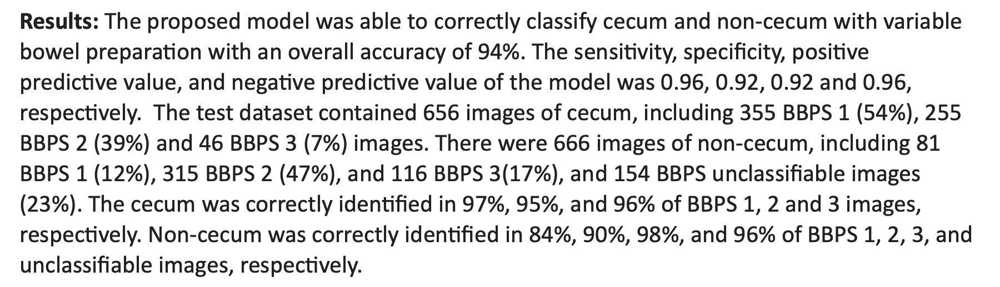
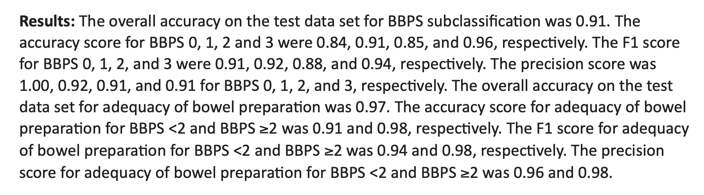

NOTE : Currently both of the works described on this page have been submitted (and accepted) as abstract papers (1 page limit) to the DDW conference 2021. Separately, the complete manuscripts for the works are undergoing the review process for the Journal of the Canadian Association of Gastroenterology. More results and descriptions will be added to this page once the mansucripts get published.
Our work achieves state-of-the-art results using a deep convolutional neural network based approach for detecting cecal intubation and bowel preparation level, both of which are very important for reducing post-colonoscopy colorectal cancer chances in patients undergoing the procedure.
We use a deep convolutional neural network to detect colonoscopy completion with varying bowel preparation to better understand completion of the procedure and thus reduce the chances of post-colonoscopy colorectal cancer.
Inadequate bowel preparation increases chances of post-colonoscopy colorectal cancer. We use a deep convolutional neural network to detect adequacy of bowel preparation using Boston Bowel Preparation Scale (BBPS).
The final version of the submitted abstracts are available below :
Please cite our work if it is helpful to your work :
Automated detection of cecal intubation with variable bowel preparation
@article{LOW2021S-376,
title = {Fr614 AUTOMATED DETECTION OF CECAL INTUBATION WITH VARIABLE BOWEL PREPARATION USING A DEEP CONVOLUTIONAL NEURAL NETWORK},
journal = {Gastroenterology},
volume = {160},
number = {6, Supplement },
pages = {S-376-S-377},
year = {2021},
issn = {0016-5085},
doi = {https://doi.org/10.1016/S0016-5085(21)01615-2},
url = {https://www.sciencedirect.com/science/article/pii/S0016508521016152},
author = {Daniel J. Low and Zhuoqiao Hong and Sechiv Jugnundan and Anjishnu Mukherjee and Samir C. Grover}
}
@article{LOW2021S-376,
title = {Fr613 AUTOMATED DETECTION OF BOWEL PREPARATION ADEQUACY WITH DEEP CONVOLUTIONAL NEURAL NETWORKS},
journal = {Gastroenterology},
volume = {160},
number = {6, Supplement },
pages = {S-376},
year = {2021},
issn = {0016-5085},
doi = {https://doi.org/10.1016/S0016-5085(21)01614-0},
url = {https://www.sciencedirect.com/science/article/pii/S0016508521016140},
author = {Daniel J. Low and Zhuoqiao Hong and Anjishnu Mukherjee and Sechiv Jugnundan and Samir C. Grover}
}